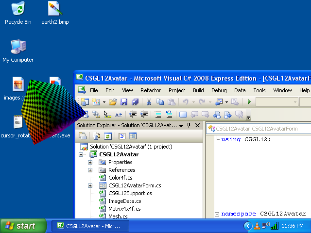

C# OpenGLインターフェイス
オペレーティングシステムをWindows
Colin Fahey

CSGL12ControlをFormには、フラクタル「ピクセルシェーダ」のプログラムを示すと、テクスチャにコピー描画GDI+

Formに2つのインスタンスをCSGL12Control 、ピクセルシェーダプログラムやテクスチャを表示

roamsは、デスクトップの3Dアバターは、カーソルを移動することができます
1. ソフトウェア
この文書のこのバージョンは、 「CSGL12」ソフトウェアに含まれています。 場合は、ソフトウェアを見つけることができませんし、以下のWebサイトには、ソフトウェアをダウンロードする：
http://colinfahey.com参照してください。
2. すべてのC# OpenGLインターフェイス（ CSGL12 ）のC#コンピュータのコードを「パブリックドメインにある」
私はC# OpenGLインターフェイス（ CSGL12 ） C#内のすべてのコンピュータのコードを書いた。
私はC# OpenGLインターフェイス（ CSGL12 ）には、パブリックドメインにあるすべてのC#コンピュータ「コードを宣言する」 。
そのため、コンピュータのコードを任意の目的のために使用することができます（商用またはプライベート） 、支払いをせずに、制限なしで、義務がなく、原作者の認識なし。
このコードは、変更することができますまたは一部を再利用し、規制がなく、義務がなく、原作者の認識なし。
の例のプログラムには、少量のコンピュータコード（具体的には、 「コンピュータコードshader ）書かれた他の人々です。」 そのようなコードでは、それ自体のインターフェイス内ではなく、自明に削除することができます。 このようなコードを作成して使用するだけshaderプログラムのインターフェイスを使用することのシンプルさ「を発揮」することです。
3. はじめに
「CSGL12」 C#コンピュータコードのファイルは、 OpenGLグラフィックライブラリへのインターフェイスを実装するコレクション（ 2007年までのOpenGLのすべての拡張子）は、オペレーティングシステムを含むWindowsです。
の「CSGL12」コレクション内のC#コンピュータコードのファイルを簡単に「Form」 「System.Windows.Forms.Form」 （インスタンス）を任意のC# / .NETソフトウェアへの描画はOpenGLを追加することができます。
コンピュータコードのファイルのファイル「CSGL12」コレクション「CSGL12Control.cs」 、これはクラス「CSGL12Control」 、 「System.Windows.Forms.Control」に由来する名前の定義の名前が含まれています。 「CSGL12Control」の各インスタンスは独立OpenGL描画領域を表します。 とてもForm System.Windows.Forms.Form （インスタンス）にCSGL12Controlの複数のインスタンスを追加するには簡単です。
4. 特性と「CSGL12」の要件
.NET 2.0 Framework (Windows 2000, Windows XP, Windows Vista, Windows 7)のコードのみをサポートしているオペレーティングシステム向けのWindows
このコード（無料コンパイラ） 「Microsoft Visual C# 2008 Express Edition」を使用する場合、または同様のC#のコンパイラはコンパイルすることができます。
このコードでは「[X] Allow unsafe code」は、コピー機能を使用することができますので、選択した画像データを最適化オプションで構築されてビルドする必要があります。 簡単「unsafe」場合は、オプションを無効にし、必要に応じて、または必要必要なC#コードの部分を識別することができますC#プログラマーは専門家です。 画像データのコピーを10倍速く「unsafe」コードは代替よりも、このようなコードが使用される理由を使用しています。 DLL場合は、すべてのコードが含まれて「unsafe」して、プロジェクトでは、使用しているDLLの「unsafe」オプションで構築されて、必要としないので、余計な意味を推測することができますが構築されていないプロジェクトの「unsafe」オプションの不在安全性（ DLLため、多数のファイルは、暗黙的または明示的にプログラムが危険なコードを含む）を「使用」しています。
のコードをコンパイルし、次のいずれかで使用される：
Microsoft Visual C# 2008 Express Edition
Microsoft Visual Studio 2008
Microsoft .NET 3.5 SDK
SharpDevelop
Mono Project
このコード（ OpenGL拡張機能を提供して1年を通じて最も2007 ） 、 「vertex shaders」と「pixel shaders」含む。
1570のコードに関連する機能を提供していますOpenGL ：
336 GL functions
51 GLU functions
19 WGL functions
1164 extensions
このコードは、異なるパラメータの型との1570機能のいくつかの代替バリエーションを提供、便宜のために。
OpenGLのためのコードを3244定数以上定義しています。
このコードは、複数のコンテキストOpenGL描画が可能になります、すべてのアニメーション独立し、任意の「Form」 。
一「CSGL12Control」をクリックすると、 「入力フォーカス」を与える「ことができます」その後のキーボードとマウスホイールを入力。カーソルをクリックするとカーソルの動きが「CSGL12Control」のインスタンスの矩形領域内で受信されています。
C#と.NETのコードをどのようにいくつかの共通のタスクを実行するOpenGLを示すための機能が含まれます。
このコード「class GL」のアルファベット順に「GL.cs」では、簡単に定数や関数が見つからない場合（これは低いですが、拡張子2007年後に採用を決定することを除いて）すべてのOpenGLの定数および関数の一覧です。
この例のプログラムを行う方法をBitmapに図面GDI+し、コピーする方法について詳細はBitmap一テクスチャOpenGL 。
これにより、テキストおよびその他のGDI+描画機能OpenGLに寄与することをするシーンです。
GDI+ Bitmapの更新およびアップロードするには、できるだけ頻繁にOpenGLテクスチャOpenGLフレームごとに1回です。
このサンプルプログラムは、プログラムを実行されているいくつかの異なる方法「pixel shader programs」の中から選ぶことを示しています。
この例のプログラムをどのように画像ファイル（ JPG 、 BMP 、 GIF 、 PNG ）にOpenGLバッファを書くことを示しています。
プレスShift + 0 （シフトゼロ）のイメージファイルへの書き込みバッファOpenGL 。
この例のコードをどのようにDLLファイルにし、 DLL別のプロジェクトファイルを、 （文脈依存のコード補完）が頻繁になるからとしつこく「IntelliSense」 （例えば、 Microsoft Visual C# 2008 Express Edition 、 etc ）をMicrosoftコードエディタを防ぐことができます追加「GL.cs」コンパイルを示して応答を停止（繰り返し数秒のため、エディタを全く使用できないこと）を一時停止。 しない限り、一人は、エディタの遅さを我慢してされているファイルを直接「GL.cs」て任意のプロジェクトに含まれるMicrosoftコードエディタで編集中、実用的ではない。 この問題はMicrosoft Visual Studio 2003 、 2005 、 2008 、影響を及ぼしている、おそらく2010のバージョンに影響を与えることもできます。
この例のコードは、 「Form」に「CSGL12Control」の複数のインスタンスの使用を実証します。
この例のコードはWindowsのデスクトップroams 「を3D」アバターを作るためのコードが含まれています。
5. サンプルプログラムに含まれて「CSGL12」
5.1 「CSGL12DLL」
このプロジェクトの名前を「CSGL12DLL」生成DLL 「CSGL12DLL.dll」が含まれて「class GL」 （ C#ファイル「GL.cs」で定義）という名前のファイルです。
DLLファイルにし、他のプロジェクトを使用して「class GL」置くことDLLで使用「class GL」 、 IntelliSense機能を使ってすべてのMicrosoftのコードエディタでは、極端な問題を回避できます。 プロジェクトGL.cs直接のC#ファイルを完全に反応しなくなるし、ほぼ連続的にIntelliSense機能の効率の悪さに（そして、事実が明らかにIntelliSenseエディタのメインプログラムのスレッドのブロックを使用できなくIntelliSense機能を使って任意のコードエディタMicrosoftとなる可能性も使用） 。
場合は、プロジェクト内のファイルだけに直接お「GL.cs」を含めることができますMicrosoftによっては（例えば、 「SharpDevelop」 、 「MonoDevelop」など）を生産されていないC#コードエディタを使用していると、そうだろう「CSGL12DLL.dll」を使用してからの利益を得るために。
5.2 「CSGL12Control」
このプロジェクトの名前を「CSGL12Control」生成DLL 「CSGL12Control.dll」が含まれて「class CSGL12Control」 （ C#ファイル「CSGL12Control.cs」で定義）という名前のファイルです。
でDLLファイルには、 「class CSGL12Control」置くこと「Control」 （すなわち、クラス「System.Windows.Forms.Control」から派生） Microsoft Visual C# 2008 Express Editionの「Toolbox」 （および同様のC#編集者）を追加することができます。 「Toolbox」で「CSGL12Control」ことは簡単に一人が「Designer」で「Form」に（例えば、単純に選択して「Toolbox」を「Form」から「CSGL12Control」のインスタンスをドラッグします）は、カーソルを使用することができます一人「CSGL12Control」のインスタンスを追加することができます。
OpenGL描画オブジェクトは、コンテキストの「CSGL12Control」運営しています。 「CSGL12Control」の複数のインスタンスを「Form」上に共存させることができます。
5.3 「CSGL12Example1」
「CSGL12Example1」 「CSGL12Example1.exe」という名前は、プロジェクトの実行可能プログラムファイル（ EXE ）を生産した。 このプログラムはCSGL12Controlのインスタンスを表示し、キューブOpenGLを使用して描画「CSGL12DLL.dll」と「CSGL12Control.dll」使用しています。
プログラム（ 、レンガ、木材、フラクタルと漫画） 「の」四種類「「pixel shaders」の使用を示しています」 。
このプログラムはまた「GDI+」 、 .NET描画ライブラリの「Bitmap」オブジェクトにテキストや他の図形を描くことを示します（ 「GDI+」オブジェクト）し、 OpenGLで「texture」ようになり、画像を描画できるように「Bitmap」からの画像データをコピー「GDI+」でOpenGL図面に表示する。 これと同様のOpenGL 「GDI+」が見つかりました2D libaries描画機能は、 2D図面の多くに欠けてこの機能は非常に便利です。
5.4 「CSGL12Example2」
「CSGL12Example2」 「CSGL12Example2.exe」という名前は、プロジェクトの実行可能プログラムファイル（ EXE ）を生産した。 このプログラムはそれぞれのキューブOpenGLを使用して描画CSGL12Controlの2つのインスタンスを表示し、 「CSGL12DLL.dll」と「CSGL12Control.dll」使用しています。
このプログラムは「Form」に「SplitContainer」 「Control」している。 各「SplitContainer」の2つの領域のCSGL12Controlのインスタンスが含まれています。 このように、一人CSGL12Controlの2つのインスタンス間で分割の位置を調整することができます。 これは、 CSGL12Controlの柔軟性を示しています。
CSGL12Controlのインスタンスを1つのイベントハンドラを設定する「CSGL12Example2Handler1.cs」は、 「CSGL12Example1」プロジェクト「CSGL12Example1Handler.cs」例のように、同じコードを使用してのインスタンスでイベントを送信します。 したがって、 1つ1つを選択CSGL12Control 4 「pixel shader」でご利用いただけます「pixel shaders」キューブの中からは、インスタンスの引き分け。
CSGL12Controlの他のインスタンスのイベントハンドラを設定する「CSGL12Example2Handler2.cs」 、 「image.jpg」されていない場合は、画像の名前のファイルを（または、市松模様「のテクスチャ画像」を使用して描画するキューブのインスタンス）のイベントを送信します。
5.5 「CSGL12Avatar」
「CSGL12Avatar」 「CSGL12Avatar.exe」という名前は、プロジェクトの実行可能プログラムファイル（ EXE ）を生産した。 このプログラムは、デスクトップ領域Windowsアバターroamsを描く3Dを有効にし、透明色のキューブを国境なく「Form」にOpenGLを使用する場合「、ベースに」描くこと「CSGL12DLL.dll」と「CSGL12Control.dll」使用しています。
移動avatarをクリックすることができますし、新しい場所にカーソルを使用してドラッグします。 二重にするように消えるavatarをクリックします。 そのコードは、立方体を描画するだけで、他のことを描くOpenGLするために使用することができます。
アバターのプログラムの「複数」の「インスタンス」を起動することができます。 したがって、多くの独立した「アバター」のインスタンスを同時にWindowsのデスクトップを歩き回ることができます。 これは面白いです。 専門家の多くのプログラマC#アバターインスタンスの活動を調整する方法の「発見を楽しむ」ことがあります。
残念ながら、これで透明性をWindowオブジェクトは、画面上で更新されている料金はOpenGLで描くことができますが、速度よりも遅くなります。 この「アバター」は毎秒10回の更新。 この改善されるかどうか分かりませんが。
5.6 「CSGL12BuiltExecutableExamplesForReference」
すべての例では、ディレクトリ「CSGL12BuiltExecutableExamplesForReference」プロジェクトのファイルやEXEによって作らDLLファイルが含まれている。 これらのファイルは、参考として、これは、ファイルをすぐに、たとえ一人の能力を提供C#コードからは、さまざまなプロジェクトをコンパイルする必要はありませんテストすることができます提供されています。
5.7 「CSGL12UsefulCode」
は、ディレクトリ「CSGL12UsefulCode」は平凡な人OpenGL描画操作でやってみたい人に役立つC#ファイルが含まれている。 DLLのファイルが含まれているディレクトリも「CSGL12DLL.dll」と「CSGL12Control.dll」便宜のために。
このコードでは、ディレクトリColor4f 、 Vector3f 、 Matrix4x4f 、 Triangle 、 Mesh 、 ImageData 、 Texture 、 ShaderProgramなど様々なclass種類を定義しています このコードは合理的、効率的ですが、コードのみの人は、自分の実装の開発を刺激することを意図しています。
6. CSGL12ファイル
C#コンピュータコードファイルの「CSGL12」コレクションは、ファイルには、次の図に示すが含まれています：

C#コンピュータコードファイルの「CSGL12」コレクションのファイルをこの図に示されています。
このソフトウェアは「CSGL12」 （ 「CSGL12DLL.dll」と「CSGL12Control.dll」 ）は、図に示すように、 2つのDLLファイルを作成するプロジェクトが含まれています。 これら2つのファイルを複数のプログラムを作成するDLL便利にするために作成することができますOpenGLを使用するだけでなく、直接プログラムC#ファイルのみを使用して作成することが可能です。
7. 「namespace CSGL12」と「class」種類
C#コンピュータコードファイルの「CSGL12」収集と「namespace CSGL12」を定義する「class」の種類は以下の図に示す：

C#コンピュータコード「CSGL12」収集と「namespace CSGL12」ファイルの種類を定義する「class」この図に示す。
「class GL」されたプログラムのみを使用して作成することができます（直接、 C#ファイルの使用やGL.csも「class GL」が含まれているDLLファイルを使用してCSGL12DLL.dll ）図面OpenGLありません。 しかし、使用し「class CSGL12Control」 （直接CSGL12Control.csまたはCSGL12Control.dllも「class CSGL12Control」含まれているDLLファイルを使用して、 C#ファイルを使用して） OpenGLをForm （ System.Windows.Forms.Formに描画）を追加する簡単で便利。
C#クラスのColor4f 、 CSGL12Support 、 ImageData 、 ... 、図の下部にある利便性のみを提供しています。 これらのクラスを使用して簡単にOpenGLを描くプログラムを作成することができます。 ただし、すでにこれらのクラスは、クラス内の操作を実行するか、または似たようなクラスは異なる、より効率的に作成するように選択の操作を実行する可能性もあるかもしれない。 これらのクラスは、特定のコードの設計と実装の例として提供されています。
8. 一System.Windows.Forms.Form上の1つを使用して「CSGL12Control」
8.1 プログラム構造
以下の図のプログラムをどのようにSystem.Windows.Forms.Form描画を行うには、単一のOpenGLと「CSGL12Control」使用することができますを示しています。 図の様々なプログラムを構築するために使用さCSGL12ファイルを示しています。

プログラムをSystem.Windows.Forms.Form上の単一「CSGL12Control」を使用して
8.2 Microsoft Visual C#を使用して、プログラムを作成する
(1)スタートMicrosoft Visual C# 。
(2)メニューを選択してください「File」 -> 「New Project...」 。
(3)は、 「Windows Forms Application」を選択し、表示される「New Project」 ]ダイアログボックスで、そのプログラムには、を押して「OK」の名前を選択してください。
(4)すぐ「File」 -> 「Save All」を選択して、 「Solution」保存してください。 「Save Project」のタイトルを持つダイアログボックスは、プロジェクト名、ディレクトリの場所を設定することができますし、プロジェクトのために「は」 、 「ソリューション」の名前が表示されます。 これは、次の命令の準備されているディレクトリの場所を忘れないでください。 「Save」ボタンを押して、プロジェクトを保存します。
(5)をコピーしたディレクトリ（たとえば、ディレクトリ「Form1.cs」 、 「Form1.Designer.cs」 、 「Program.cs」 、等のファイルを含む）は、新しいプロジェクトのソースコードファイルを含むディレクトリへの「CSGL12」ソフトウェアの「CSGL12UsefulCode」からすべてのファイルなどは、ファイル「CSGL12DLL.dll」 、 「CSGL12Control.dll」 、 「Color4f.cs」 、 「CSGL12Support.cs」など、新しいプロジェクトファイル「Form1.cs」などと一緒にしている
(6) Microsoft Visual C#では、プロジェクトにファイルを追加「CSGL12」 C# 。 のメニューで、 [ 「Project」 -> 「Add Existing Item...」 、および「Add Existing Item」 ]ダイアログボックスで、すべてのCSGL12ソフトウェア（ 「Color4f.cs」 、 「CSGL12Support.cs」 、 「ImageData.cs」 、 ...). C#からファイルを選択してください
(7) Microsoft Visual C#では、 「DLLファイル」への参照を追加「CSGL12DLL.dll」と「CSGL12Control.dll」 。 のメニューで、 [ 「Project」 -> 「Add Reference...」 、および「Add Reference」 ]ダイアログボックスで、 「Browse」 ]タブを選択し、ファイルを選択「CSGL12DLL.dll」と「CSGL12Control.dll」は、プロジェクトのソースファイルのディレクトリから、を押して「OK」 。
(8) Microsoft Visual C#では、 「Toolbox」に「CSGL12Control」を追加します。 メニューを選択してください「Tools」 -> 「Choose Toolbox Items...」 。 表示される「Choose Toolbox Items」 ]ダイアログボックスで、 「Browse...」ボタンを押すとソースコードファイルには、プロジェクトディレクトリに移動し、 「CSGL12Control.dll」選択してください。 を押すと、 「OK」ボタンをクリックします。
(9) Microsoft Visual C#では、 「Toolbox」を表示します。 メニューを選択してください「View」 -> 「Toolbox」 。 の「Toolbox」では、 「General」という名前のセクションに移動し、そのアイテム「CSGL12Control」名前を見つけます。 カーソルを使用して、 「CSGL12Control」名前の項目をクリックすると「Form」に「Design」ビューにドラッグします。
(10) Microsoft Visual C#では、 「Form」 「Design」を表示すると、インスタンスの「Form」上の「CSGL12Control」とその幅と高さを調整移動してください。 場合は、プログラムのウィンドウサイズの変化に応じてサイズを変更するには、制御したい「Properties」パネルでは、 「Top, Bottom, Left, Right」を含めるように「Anchor」値を設定します。
(11) Microsoft Visual C#では、 「unsafe」コードを使用することができますように、プロジェクトのプロパティを変更してください。 メニューを選択してください「Project」 -> 「[project] Properties...」 。 を選択し、表示されるダイアログボックスで、名前「Build」タブを選択し、名前「[X] Allow unsafe code」 ]チェックボックスをチェックしてください。 プロジェクトのプロパティ]ダイアログボックスを閉じます。
(12) Microsoft Visual C#で、新しいC#ファイルをプロジェクトに追加します。 メニューを選択してください「Project」 -> 「Add New Item...」 。 「Add New Item」という名前は、ダイアログボックスで、 「Class」という名前のテンプレートを選択し「CSGL12MyHandler.cs」などの新しいクラスの種類の名前を選択し、 「Add」ボタンを押します。 「CSGL12Example1」という名前のプロジェクトの例では、ファイル「CSGL12Example1Handler.cs」という名前で、どのよう「CSGL12MyHandler.cs」のコードを記述する必要がありますの一例として見てください。
(13) Microsoft Visual C#では、 「Solution Explorer」 、 「Form1」をクリックします。 メニューを選択してください「View」 -> 「Code」 （またはキーを押しますF7 、または「Form1」を右クリックして選択「View Code」 。 「Form1.cs」のファイルのコードエディタに表示されます。 「Form1.cs」 、ファイル内のコードを変更して、プロジェクト内のファイル「CSGL12Example1Form.cs」内のコードを「CSGL12」ソフトウェアに含まれて「CSGL12Example1」似ている。 特に、をクリックし、 「Form」に「CSGL12Control」のインスタンスの様々なイベントのイベントハンドラとして、そのクラスのインスタンスのメソッドを追加するイベントハンドラクラス（例えば、 「CSGL12MyHandler」 ）のインスタンス用の変数を作成します。
(14) Microsoft Visual C#では、コンパイルして、プログラムを実行してください。 プログラムの共有を希望する場合は、 （ 「CSGL12DLL.dll」と「CSGL12Control.dll」 ）は、実行可能ファイル（ *.exe ）との2つのDLLファイルをインクルードする必要があります。
場合は、専門家C#プログラマを必要とする場合は、 （ 「CSGL12DLL.dll」と「CSGL12Control.dll」 ） DLLファイルを配布するのを避けることができます（ *.exe ）実行可能。
コピー「GL.cs」 、 「CSGL12Control.cs」 、およびプロジェクト「CSGL12DLL」と「CSGL12Control」の「CSGL12」ソフトウェアで、現在のプロジェクトのソースディレクトリにファイルの名前から「PrecisionTime.cs」 。 「GL.cs」 、 「CSGL12Control.cs」 、あなたのプロジェクトになるように直接プログラムをコンパイルされている「PrecisionTime.cs」にファイルを追加します。 このプロジェクトで「CSGL12DLL.dll」と「CSGL12Control.dll」への参照をお持ちでない場合。
「CSGL12Example1」の「CSGL12」ソフトウェアのプロジェクトでは、見てのファイル「CSGL12Example1Form.cs」と「CSGL12Example1Form.Designer.cs」コード作成して「Form」に「CSGL12Control」のインスタンスを初期化するという名前の何が必要かを確認するように、コードを見てください。 「Form1.cs」と「Form1.Designer.cs」のようにコードを追加します。 「Form」を手作業で作成して、ご自分で「CSGL12Control」のインスタンスを初期化します。
この手順は非常に不便な専門知識と細心の注意が必要ですが、実行可能ファイル（ *.exe結果）を必要としません「CSGL12DLL.dll」または「CSGL12Control.dll」 。 とても1つの実行可能ファイル（ *.exe ）の形でお使いのソフトウェアを共有できるように他のファイルを必要とせずにいいです。
8.3 CSGL12DLL.dllとCSGL12Control.dllへの「参照」を追加する
このセクションでは、プロジェクトCSGL12DLL.dllとCSGL12Control.dllにDLL 「のファイルへの参照」を追加するにはMicrosoft Visual C# 2008 Express Editionを使用しての画像が含まれています。
メニューを選択してください「Project」 -> 「Add Reference...」 。 または、 「Solution Explorer」パネルを選択します「Add Reference...」を右クリックして「References」項目は、次の画像に表示されます。

「Solution Explorer」では「References」アイテムのコンテキストメニューは、 「Add Reference...」オプションを表示
「Add Reference...」オプションは、ダイアログボックスが表示される名前を選択した後「Add Reference」 。 そのダイアログボックスで、 「Browse」 ]タブを選択し、 「CSGL12DLL.dll」と「CSGL12Control.dll」は、次の画像に表示されるDLLファイルを選択し、 [ラベル「OK」ボタンを押してください。

のDLLファイルを「Add Reference」 ]ダイアログボックスのタブ「Browse」 、 「CSGL12DLL.dll」と「CSGL12Control.dll」の両方を選択
ボタンを「OK」 、消えるは「Add Reference」 ]ダイアログボックス、およびDLLファイル「CSGL12DLL.dll」と「CSGL12Control.dll」の「Solution Explorer」で「References」枝に表示されるように、次の図に示す標識を押している。

DLLファイルの「CSGL12DLL.dll」と「CSGL12Control.dll」の「Solution Explorer」で「References」支店で
8.4 ToolboxにはMicrosoft Visual C# 2008 Express EditionでCSGL12Control追加
このセクション） 「Toolbox」するためCSGL12Controlを追加するには、デフォルトでは、人を簡単に「Designer」で「Form」 （ Shift+F7にCSGL12Controlのインスタンスを追加することができますMicrosoft Visual C# 2008 Express Editionを使用しての画像が含まれています。
メニューを選択してください「View」 -> 「Toolbox」 。 の「Toolbox」では、セクション「General」という名前には、次の画像に表示する。

の「Toolbox」の「General」セクション
「Toolbox」内の任意の場所を右クリックしてください。 選択して、次の画像に表示表示されるコンテキストメニューのオプションを「Choose Items...」 。

の「Toolbox」のコンテキストメニューのオプションを「Choose Items...」
また、メニューには、 [選択「Tools」 -> 「Choose Toolbox Items...」 。
「Choose Toolbox Items」 ]ダイアログボックスのように、次の画像に表示されます。

このダイアログボックス「Choose Toolbox Items」
の「Choose Toolbox Items」 ]ダイアログボックスで、 「Browse」ボタンを押します。 表示される「Open」 ]ダイアログボックスで、次の画像にして、 「OK」ボタンを押すと表示されるDLLファイル「CSGL12Control.dll」選択してください。

DLLファイルでは、 「Open」 ]ダイアログボックスで、選択した「CSGL12Control.dll」
「CSGL12Control」商品は現在、 「Choose Toolbox Items」ダイアログボックスで、次の画像に表示されます。 を押すと、 「OK」ボタンをクリックします。

「CSGL12Control」商品は現在、 「Choose Toolbox Items」 ]ダイアログボックスに表示されます
「CSGL12Control」商品は現在、 「Toolbox」では、次の画像に表示されます。

今では「Toolbox」の「CSGL12Control」項目に表示されます
8.5 一「Form」に「Toolbox」を使用してCSGL12Control追加
このセクションでは、 「Form」に「Toolbox」を使用してCSGL12Controlのインスタンスを追加するMicrosoft Visual C# 2008 Express Editionを使用しての画像が含まれています。
のメニューで、 [ 「View」 -> 「Designer」 （ Shift+F7デフォルトでは） 。 「Solution Explorer」ではまた、ファイルをダブルクリックすると「Form*.cs」 。 または右クリックし、 [ 「Solution Explorer」と「View Designer」で「Form*.cs」ファイルを選択してください。 これらの3つの方法の1つを使用して、一「Form」の「Designer」ウィンドウに表示されます。
メニューを選択してください「View」 -> 「Toolbox」 。 の「Toolbox」では、 「General」という名前のセクションに進みます。 項目を「CSGL12Control」は、次の画像に表示の名前が表示されます。
「Toolbox」では、すでに「CSGL12Control」する必要があります
カーソルを使用して、 「CSGL12Control」名前の項目をクリックすると「Form」に「Designer」にドラッグします。 「CSGL12Control」のインスタンスが「Form」としては、次の画像に表示に表示されます。

「Designer」では「Form」に「CSGL12Control」のインスタンス
「Form」 「Designer」のビューで、 「Form」に「CSGL12Control」のインスタンスを移動するとその幅と高さを調整します。
「Form」には「CSGL12Control」のインスタンスをクリックして選択します。 その後、 「Properties」パネルのように「CSGL12Control」のサイズは、プログラムウィンドウのサイズの変化に応じて変更されます「Top, Bottom, Left, Right」を含めるように「Anchor」値を設定します。 また、 （すなわち、 「(Name)」の値）をコード（例えば、 「mCSGL12Control」や「mCSGL12Control1」等）のため何かを適切に自動デフォルトから「CSGL12Control」のインスタンス（例えば、 「csgL12Control」 ）の変数名を変更することができます。
次の画像は、 「Form」 「Designer」ビューと「Properties」パネルを示しています。

DesignerではFormにCSGL12Controlのインスタンス、および「Propertiesパネル
9. 一System.Windows.Forms.Formに「CSGL12Control」の2つのインスタンスを使用する
以下の図「CSGL12Control」の2つのインスタンスをどのようにOpenGLとSystem.Windows.Forms.Form描画するプログラムに追加することができますの例を示します。

プログラムをSystem.Windows.Forms.Formに「CSGL12Control」の2つのインスタンスを使用して
前のセクションでは、手順を「Form」を「CSGL12Control」の単一のインスタンスを追加します。 その後は、単純に「Toolbox」から2番目の「Form」に「CSGL12Control」を追加するには「CSGL12Control」の2番目のインスタンスをドラッグします。
「CSGL12Control」の各インスタンスは独自の変数名があります。 「CSGL12Control」の各インスタンスは独自の関連するイベントハンドラクラスを持つことができますか、または1つのタイプの異なるハンドラクラスのインスタンスを使うことができます。
研究では、サンプルプロジェクト「CSGL12Example2」 2つのインスタンス「CSGL12Control」方法を学ぶには、イベントを持つことができますOpenGL独特の描画機能を備えた2つのカスタムイベントハンドラクラスのインスタンスに送られます。
「CSGL12Example2」を「SplitContainer」 「Control」で「CSGL12Control」の各インスタンスしているプログラムの例では、単純に「CSGL12Control」のインスタンスを使用することができます1つの方法を実証する。 しかし、 「CSGL12Control」のインスタンスの代わりに「Form」に直接置くことができます。
10. CSGL12Controlのインスタンスを持つ「Form」の例C#コード
以下は、完全なC#コードは、ファイル「CSGL12Example1Form.cs」は、例えば、プログラムの一部です「CSGL12Example1」に含まれています。
このコードは、ここの簡単な例として提示されてCSGL12Controlのインスタンスを作成することができますし、 「Form」で使用される。
using System;
using System.Collections.Generic;
using System.ComponentModel;
using System.Data;
using System.Drawing;
using System.Linq;
using System.Text;
using System.Windows.Forms;
using CSGL12;
namespace CSGL12Example1
{
public partial class CSGL12Example1Form : Form
{
public CSGL12Example1Handler mCSGL12Example1Handler;
private System.Windows.Forms.Timer mTimer;
public CSGL12Example1Form()
{
InitializeComponent();
mCSGL12Example1Handler = new CSGL12Example1Handler();
mCSGL12Control1.OpenGLStarted += new CSGL12Control.DelegateOpenGLStarted( mCSGL12Example1Handler.OpenGLStarted );
mCSGL12Control1.KeyDown += new KeyEventHandler(mCSGL12Example1Handler.KeyDown);
mCSGL12Control1.KeyUp += new KeyEventHandler(mCSGL12Example1Handler.KeyUp);
mCSGL12Control1.MouseDown += new MouseEventHandler(mCSGL12Example1Handler.MouseDown);
mCSGL12Control1.MouseUp += new MouseEventHandler(mCSGL12Example1Handler.MouseUp);
mCSGL12Control1.MouseMove += new MouseEventHandler(mCSGL12Example1Handler.MouseMove);
mCSGL12Control1.MouseWheel += new MouseEventHandler(mCSGL12Example1Handler.MouseWheel);
mCSGL12Control1.Paint += new PaintEventHandler(mCSGL12Example1Handler.Paint);
// Use a timer to trigger drawing at the desired frame rate.
//
// Windows timers are not very precise. Also, if we call wglSwapIntervalEXT(1)
// and we specify in the global OpenGL control panel that OpenGL drawing
// should wait for vertical sync (vsync) of the display, then the frame
// rate would be limited to 60 frames/second or 75 frames/second, for example,
// and our program would have to draw each frame in less than 1/60 seconds
// (16.6 milliseconds) or less than 1/75 seconds (13.3 milliseconds),
// otherwise the drawn frame would be forced to wait one or more full
// frame durations before appearing on the screen. Therefore, it would
// be best to have the timer interval somewhat shorter than a full frame
// interval, to ensure that even if there is a slight delay in responding
// to the timer event we will have at least one timer event per display
// frame interval.
//
// Theoretically, a timer interval of 16 milliseconds would be short enough
// to sustain a frame rate of 62.5 frames/second, and would seemingly have
// a corresponding rate sufficient to sustain 60 frames/second in the case
// of a vertical-sync limited drawing rate for OpenGL. However, in simple
// experiments on a system with a 2.5 GHz Core 2 Duo CPU with an nVidia
// GeForce 8600M GS with 512 MB, I found that a 16-millisecond Windows
// timer interval results in a 33 frames/second OpenGL frame rate (where
// vertical-sync locking is enabled, and the display refresh rate is
// 60 frames/second). So, despite theoretically being slightly more rapid
// than necessary to maintain a 60 frames/second drawing rate, a Windows
// timer with an interval of 16-milliseconds isn't quite rapid enough to
// ensure drawing soon enough to be ready for each display refresh; hence
// the rather significantly lower than desired frame rate of 33 frames/second.
//
// Here are the OpenGL drawing frame rates (limited to 60 Hz vertical sync)
// I observed on a particular computer for particular Windows timer intervals:
//
// 18-millisecond timer interval --> 31 frames/second OpenGL drawing
// 17-millisecond timer interval --> 31 frames/second OpenGL drawing
// 16-millisecond timer interval --> 33 frames/second OpenGL drawing
// 15-millisecond timer interval --> 60 frames/second OpenGL drawing
// 14-millisecond timer interval --> 60 frames/second OpenGL drawing
//
// So, it seems like choosing a Windows timer interval only a couple of
// milliseconds shorter than the theoretical 16.6 millisecond interval
// corresponding to a 60 frames/second rate is enough for this program to
// submit each new frame in time for the next display refresh.
//
// However, computers with slower CPUs or slower GPUs might benefit from
// an even shorter Windows timer interval, to ensure that drawing will
// happen soon enough for the next display refresh.
//
// Some displays are set to refresh at 75 frames/second, which corresponds
// to a frame duration of 13.3 milliseconds. We will aim for this drawing
// rate, and we will subtract a few milliseconds from the Windows timer
// interval to ensure that we receive and process the timer event soon
// enough to submit the frame in time for the next display refresh.
// Meanwhile, we will choose the Windows timer interval such that it isn't
// absurdly short, lest future faster computers actually manage to draw
// at that wasteful rate.
//
// Choosing a Windows timer interval of 10 milliseconds seems like it will
// reliably be able to trigger OpenGL frame drawing in time to keep up with
// a 75 frames/second display (13.3 millisecond frame duration), while
// only causing the OpenGL drawing to happen at a maximum rate of
// 100 frames/second in the unlikely scenario of a very fast computer
// actually being able to draw frames at that rate (given the overhead of
// C#, etc).
mTimer = new System.Windows.Forms.Timer();
mTimer.Interval = 10; // 10-millisecond interval
mTimer.Tick += new EventHandler(PrivateTimerTickEventHandler);
mTimer.Start();
// Set focus to a control so that it can immediately accept input
mCSGL12Control1.Focus();
// Also, whenever the form becomes activated, set focus to the main
// control on the form. The following sets up an event handler for
// that purpose.
this.Activated += new EventHandler(PrivateActivatedEventHandler);
// We want to preview dialog keys (most importantly, the cursor
// keys: up, down, right, left) so we can forward such events to
// the appropriate child control.
this.KeyPreview = true;
}
void PrivateTimerTickEventHandler(object sender, EventArgs e)
{
if (false == DesignMode)
{
mCSGL12Control1.Invalidate();
}
}
private void PrivateActivatedEventHandler(object sender, EventArgs e)
{
// When this form becomes activated, after some time of not
// being active, set input focus to a GL control on the form.
if (false == mCSGL12Control1.Focused)
{
mCSGL12Control1.Focus();
}
}
// Cursor keys (up,down,left,right) need to be specially captured
// and forwarded to the control.
// CAUTION: The KeyPreview property of this Form must be set to 'true'
// for the following method to be called.
protected override bool ProcessDialogKey(Keys keyData)
{
if
(
(keyData == Keys.Up)
¦¦ (keyData == Keys.Down)
¦¦ (keyData == Keys.Left)
¦¦ (keyData == Keys.Right)
)
{
KeyEventArgs e = new KeyEventArgs(keyData);
if (true == mCSGL12Control1.Focused)
{
mCSGL12Example1Handler.KeyDown(mCSGL12Control1, e);
}
else
{
// The CSGL12Control does not have focus.
// Let's simply drop the dialog key event. The user
// may have focus on a different control.
}
return (true);
}
return base.ProcessDialogKey(keyData);
}
}
}
通知は、メンバ変数「mCSGL12Example1Handler」をclassのインスタンスを参照するために宣言されている「CSGL12Example1Handler」名前。 このクラスは、このドキュメントの後続のセクションで説明されます。 注意点は、 「CSGL12Example1Form」のためのコンストラクタは「multicast delegates」 、さまざまなイベントを「CSGL12Control」のインスタンスが生成に関連する「CSGL12Example1Handler」のインスタンスのメソッドが追加されます。 これは、さまざまなイベントが「CSGL12Control」のインスタンスを生成する手段、それらのイベント「CSGL12Example1Handler」のインスタンス（すなわち、 「mCSGL12Example1Handler」 ）のさまざまなメソッドを呼び出すことが原因となります。
通知は、メンバ変数「mTimer」をclassのインスタンスを参照するために宣言されている「System.Windows.Forms.Timer」名前。 このオブジェクトは、関数「PrivateTimerTickEventHandler」ごとに10ミリ秒単位の名前を呼び出すために使われます。 この関数「PrivateTimerTickEventHandler」 「CSGL12Control」のインスタンス（すなわち、 「mCSGL12Control1」 ）は、それ自体を描くことが「Control」原因という名前のメソッドを呼び出す。 このように「CSGL12Control」のインスタンスは、おおよその速度でアニメーションすることができます。
「class CSGL12Example1Form」の定義の一部のみがC#で「CSGL12Example1Form.cs」名前のファイルが表示されます。 「class CSGL12Example1Form」の定義の別の部分をC# 「CSGL12Example1Form.Designer.cs」名前のファイルに表示されます。 ただし「*.Designer.cs」パターンと一致するファイル名は、一般的に作成され、 C#エディタのグラフィカル「Form Designer」ウィンドウのみが変更された、それも作成することが可能ですC#や変更などのテキストエディタを使用してファイル。
以下は、完全なC#コードは、ファイル「CSGL12Example1Form.Designer.cs」は、例えば、プログラムの一部です「CSGL12Example1」に含まれています。
namespace CSGL12Example1
{
partial class CSGL12Example1Form
{
/// <summary>
/// Required designer variable.
/// </summary>
private System.ComponentModel.IContainer components = null;
/// <summary>
/// Clean up any resources being used.
/// </summary>
/// <param name="disposing">true if managed resources should be disposed; otherwise, false.</param>
protected override void Dispose(bool disposing)
{
if (disposing && (components != null))
{
components.Dispose();
}
base.Dispose(disposing);
}
#region Windows Form Designer generated code
/// <summary>
/// Required method for Designer support - do not modify
/// the contents of this method with the code editor.
/// </summary>
private void InitializeComponent()
{
this.mCSGL12Control1 = new CSGL12.CSGL12Control();
this.SuspendLayout();
//
// mCSGL12Control1
//
this.mCSGL12Control1.Anchor = ((System.Windows.Forms.AnchorStyles)
((((System.Windows.Forms.AnchorStyles.Top
¦ System.Windows.Forms.AnchorStyles.Bottom)
¦ System.Windows.Forms.AnchorStyles.Left)
¦ System.Windows.Forms.AnchorStyles.Right)));
this.mCSGL12Control1.BackColor = System.Drawing.SystemColors.Control;
this.mCSGL12Control1.Location = new System.Drawing.Point(12, 12);
this.mCSGL12Control1.Name = "mCSGL12Control1";
this.mCSGL12Control1.Size = new System.Drawing.Size(640, 480);
this.mCSGL12Control1.TabIndex = 0;
this.mCSGL12Control1.Text = "CSGL12Control1";
//
// CSGL12Example1Form
//
this.AutoScaleDimensions = new System.Drawing.SizeF(6F, 13F);
this.AutoScaleMode = System.Windows.Forms.AutoScaleMode.Font;
this.ClientSize = new System.Drawing.Size(664, 504);
this.Controls.Add(this.mCSGL12Control1);
this.Name = "CSGL12Example1Form";
this.Text = "CSGL12Example1";
this.ResumeLayout(false);
}
#endregion
private CSGL12.CSGL12Control mCSGL12Control1;
}
}
注意点は、このC#コードでは変数「mCSGL12Control1」 、 「class CSGL12.CSGL12Control」のインスタンス（つまり、 「class CSGL12Control」 「namespace CSGL12」 ）を参照の宣言に含まれています。 このインスタンスが作成され、機能「InitializeComponent」で構成。
11. イベントCSGL12Controlのインスタンスによって呼び出さ処理
前のセクションでは、 「Form」が「CSGL12Control」の単一のインスタンスが含まC#コードを示した。 C#コードは、さまざまなイベントのイベントハンドラとして「CSGL12Control」のインスタンスが生成さ「CSGL12Example1Handler」という名前の「class」のメソッドを追加します。
ここ「CSGL12Control」の興味深いイベントのリストであり、それらのイベントに関連付けられて「delegate」種類：
OpenGLStarted CSGL12Control.DelegateOpenGLStarted
KeyDown System.Windows.Forms.KeyEventHandler
KeyUp System.Windows.Forms.KeyEventHandler
MouseDown System.Windows.Forms.MouseEventHandler
MouseUp System.Windows.Forms.MouseEventHandler
MouseMove System.Windows.Forms.MouseEventHandler
MouseWheel System.Windows.Forms.MouseEventHandler
Paint System.Windows.Forms.PaintEventHandler
のみを「OpenGLStarted」イベントはイベントタイプの「CSGL12Control」固有のものです。
すべてのイベントが標準System.Windows.Formsイベント、そのイベントハンドラ必要があります特定のパラメータ（指定された任意のFormsのマニュアルを参照） 。
「OpenGLStarted」との「Paint」イベントOpenGLを描くための最も重要なイベントです。
「OpenGLStarted」イベントが呼び出される前に、非常に最初の「Paint」イベントが呼び出されます。
したがって、イベントハンドラを追加する必要があります「OpenGLStarted」するには、コントロールする前に 、コントロールにする機会をしようと塗料自体が、それ以降は1回限りのイベントは受信できません。
このイベントは単なる利便性、およびは無視できます。
しかし、このイベントハンドラを追加することも可能にこれを行うには、ハンドラのコードをいくつかに依存して1回限りの初期化を使用する準備がOpenGLです。
（ OpenGLするまで、ウィンドウに使われることはできませんが存在し、このウィンドウは、最初の塗料を行う準備ができています。
そのため、プログラマからの「OpenGLStarted」イベントスペアを使用しようとする危険性をOpenGLが早すぎるとした後、プログラムが起動します。
）これはかなりの「Paint」ハンドラにロジックを追加するには1回限りの初期化は、 「CSGL12Control」のOpenGLコンテキストを使用して行うことは容易である。
「OpenGLStarted」イベントとしての利便性が提供します。
以下は、完全なC#コードは、ファイル「CSGL12Example1Handler.cs」は、例えば、プログラムの一部です「CSGL12Example1」に含まれています。
このコードはここでの単純な例として提示されるイベントをどのように「CSGL12Control」のインスタンスが生成OpenGLを使用して描画する処理することができます。
using System;
using System.Collections.Generic;
using System.Text;
using System.IO;
using System.Windows.Forms;
using System.Drawing;
using System.Drawing.Imaging;
// This program requires "references" to the following:
//
// CSGL12DLL.dll (defines CSGL12.GL)
// CSGL12Control.dll (defines CSGL12.CSGL12Control)
using CSGL12;
namespace CSGL12Example1
{
public class CSGL12Example1Handler
{
private Mesh mMesh;
private ShaderProgram mShaderProgram1;
private ShaderProgram mShaderProgram2;
private ShaderProgram mShaderProgram3;
private ShaderProgram mShaderProgram4;
private ShaderProgram mShaderProgramSelected;
private Bitmap mHUDBitmap;
private Texture mHUDTexture;
private Font mFont1;
private Font mFont2;
private Font mFont3;
private Font mFont4;
private Pen mPen1;
private Brush mBrush1;
private double mViewDistance = 800.0;
private double mViewAzimuthDegrees = 0.0;
private double mViewAltitudeDegrees = 0.0;
private double mViewAzimuthDegreesVelocity = 9.0;
private double mViewAltitudeDegreesVelocity = 5.0;
private Point mMouseClientPositionStart;
private double mViewAzimuthDegreesStart = 0.0;
private double mViewAltitudeDegreesStart = 0.0;
public CSGL12Example1Handler()
{
mMesh = new Mesh();
mShaderProgram1 = new ShaderProgramMandelbrotSet();
mShaderProgram2 = new ShaderProgramWood();
mShaderProgram3 = new ShaderProgramBrick();
mShaderProgram4 = new ShaderProgramCartoon();
mShaderProgramSelected = mShaderProgram1;
mHUDBitmap = new Bitmap(512, 512, System.Drawing.Imaging.PixelFormat.Format32bppArgb);
mHUDTexture = new Texture();
mFont1 = new Font("Verdana", 36.0f);
mFont2 = new Font("Verdana", 24.0f);
mFont3 = new Font("Courier New", 16.0f);
mFont4 = new Font("Courier New", 10.0f);
mPen1 = new Pen(Color.Red, 3.0f);
mBrush1 = new SolidBrush(Color.FromArgb(64, 128, 128, 140));
}
public void OpenGLStarted( CSGL12Control csgl12Control )
{
GL gl = csgl12Control.GetGL();
if (null == gl) { return; }
// Load shaders and set variables
if (true == gl.bglCreateProgramObjectARB)
{
if (null != mShaderProgram1)
{
mShaderProgram1.ShaderProgramCreate(gl);
}
if (null != mShaderProgram2)
{
mShaderProgram2.ShaderProgramCreate(gl);
}
if (null != mShaderProgram3)
{
mShaderProgram3.ShaderProgramCreate(gl);
}
if (null != mShaderProgram4)
{
mShaderProgram4.ShaderProgramCreate(gl);
}
}
// Create cube mesh
mMesh = new Mesh();
mMesh.BuildCube(400.0f);
// Create a texture
mHUDTexture.CreateTextureFromBitmap(gl, mHUDBitmap, true);
// To prevent "tearing" (irregular streaks) due to swapping buffers at
// arbitrary times relative to the vsync times, we indicate that we wish
// to wait for vsync before swapping buffers.
// This request applies when the display driver control panel -- in the
// OpenGL settings area -- is set to let the application decide whether or
// not to wait for vsync. Otherwise, the driver control panel overrides
// any request made here.
if (true == gl.bwglSwapIntervalEXT)
{
gl.wglSwapIntervalEXT(1);
}
}
public void Paint(object sender, PaintEventArgs e)
{
if (null == sender) { return; }
if (false == (sender is CSGL12Control)) { return; }
CSGL12Control csgl12Control = (sender as CSGL12Control);
GL gl = csgl12Control.GetGL();
int clientWidth = csgl12Control.ClientRectangle.Width;
int clientHeight = csgl12Control.ClientRectangle.Height;
if (clientWidth <= 0)
{
clientWidth = 1;
}
if (clientHeight <= 0)
{
clientHeight = 1;
}
// Set the viewport
gl.glViewport(0, 0, clientWidth, clientHeight);
// Clear the viewport
gl.glClearColor(1.0f, 1.0f, 1.0f, 1.0f);
gl.glClear(GL.GL_COLOR_BUFFER_BIT ¦ GL.GL_DEPTH_BUFFER_BIT);
// Basic drawing conditions
gl.glEnable(GL.GL_DEPTH_TEST);
gl.glDepthFunc(GL.GL_LEQUAL);
gl.glEnable(GL.GL_CULL_FACE);
gl.glCullFace(GL.GL_BACK);
gl.glFrontFace(GL.GL_CCW);
// PROJECTION matrix, typically for perspective correction or orthographic projection
gl.glMatrixMode(GL.GL_PROJECTION);
gl.glLoadIdentity();
double aspectRatio = 1.0;
if (0 != clientHeight)
{
aspectRatio = ((double)(clientWidth) / (double)(clientHeight));
}
double verticalFieldOfViewAngle = 60.0;
gl.gluPerspective
(
verticalFieldOfViewAngle, // Field of view angle (Y angle; degrees)
aspectRatio, // width/height
0.1, // distance to near clipping plane
64000.0 // distance to far clipping plane
);
// MODELVIEW matrix, typically used to transform individual models
gl.glMatrixMode(GL.GL_MODELVIEW);
gl.glLoadIdentity();
// Preserve current matrix for the active matrix stack (in this case the MODELVIEW matrix)
gl.glPushMatrix();
if (mViewAltitudeDegreesVelocity != 0.0)
{
if (mViewAltitudeDegrees > 70.0)
{
mViewAltitudeDegrees = 70.0;
mViewAltitudeDegreesVelocity *= -1.0;
}
else if (mViewAltitudeDegrees < -70.0)
{
mViewAltitudeDegrees = -70.0;
mViewAltitudeDegreesVelocity *= -1.0;
}
mViewAzimuthDegrees += mViewAzimuthDegreesVelocity * csgl12Control.GetPreviousFrameDurationSeconds();
mViewAltitudeDegrees += mViewAltitudeDegreesVelocity * csgl12Control.GetPreviousFrameDurationSeconds();
}
Vector3f from =
new Vector3f
(
(float)(mViewDistance * Math.Cos(mViewAltitudeDegrees * (Math.PI / 180.0)) * Math.Sin(mViewAzimuthDegrees * (Math.PI / 180.0))),
(float)(mViewDistance * Math.Sin(mViewAltitudeDegrees * (Math.PI / 180.0))),
(float)(mViewDistance * Math.Cos(mViewAltitudeDegrees * (Math.PI / 180.0)) * Math.Cos(mViewAzimuthDegrees * (Math.PI / 180.0)))
);
Vector3f to = new Vector3f(0.0f, 0.0f, 0.0f);
Vector3f up = new Vector3f(0.0f, 1.0f, 0.0f);
Matrix4x4f camera = Matrix4x4f.LookAt(from, to, up);
float[] matrix = new float[16];
matrix[0] = camera.m11;
matrix[1] = camera.m21;
matrix[2] = camera.m31;
matrix[3] = 0.0f;
matrix[4] = camera.m12;
matrix[5] = camera.m22;
matrix[6] = camera.m32;
matrix[7] = 0.0f;
matrix[8] = camera.m13;
matrix[9] = camera.m23;
matrix[10] = camera.m33;
matrix[11] = 0.0f;
matrix[12] = camera.m14;
matrix[13] = camera.m24;
matrix[14] = camera.m34;
matrix[15] = 1.0f;
gl.glMultMatrixf(matrix);
if (mShaderProgramSelected != null)
{
mShaderProgramSelected.DemonstrateModificationOfVariables(gl, csgl12Control.GetPreviousFrameStartTimeSeconds(), csgl12Control.GetPreviousFrameDurationSeconds());
mShaderProgramSelected.Select(gl);
}
// Draw model(s), using active texture or shader
mMesh.Draw(gl);
// If we used a shader, disable it now...
if (true == gl.bglUseProgramObjectARB)
{
ShaderProgram.ShaderProgram_Select(gl, 0);
}
// Restore the previously-preserved matrix for the active matrix stack (in this case the MODELVIEW matrix)
gl.glPopMatrix();
// Demonstrate drawing text to a GDI+ Bitmap and then copying to
// an OpenGL texture.
DemonstrateDrawingTextToAGDIBitmapAndCopyingToAnOpenGLTexture(csgl12Control, gl);
// Flush all the current rendering and flip the back buffer to the front.
gl.wglSwapBuffers(csgl12Control.GetHDC());
}
public void DemonstrateDrawingTextToAGDIBitmapAndCopyingToAnOpenGLTexture(CSGL12Control csgl12Control, GL gl)
{
bool updateOverlayImage = false;
// The following code only enables an update of the Bitmap
// and OpenGL texture every 64 frames, thus avoiding the
// slowdown of performing updates every single frame.
// HOWEVER, updating the Bitmap and OpenGL texture can be
// done EVERY frame with acceptable speed.
// Updates should be limited to once per frame, but the
// logic to trigger updates can be based on when the relevant
// text changes.
if ((csgl12Control.GetTotalFramesDrawn() % 64) == 0)
{
updateOverlayImage = true;
}
bool showOverlayImage = true;
if (true == updateOverlayImage)
{
using (Graphics g = Graphics.FromImage(mHUDBitmap))
{
g.Clear(Color.FromArgb(0, Color.White));
g.FillEllipse(mBrush1, new Rectangle(0, 0, 256, 256));
g.FillEllipse(mBrush1, new Rectangle(256, 256, 256, 256));
PointF center = new PointF(0.5f * (256.0f + 0.0f), 0.5f * (256.0f + 0.0f));
PointF displacement = new PointF();
double fraction = csgl12Control.GetTotalElapsedTimeSeconds() * 0.1;
displacement.X = 128.0f * (float)Math.Cos(2.0 * Math.PI * fraction);
displacement.Y = 128.0f * (float)Math.Sin(2.0 * Math.PI * fraction);
g.DrawLine(mPen1, center, new PointF(center.X + displacement.X, center.Y + displacement.Y));
PointF carat = new PointF(0.0f, 0.0f);
String text = "";
text = "C# OpenGL (CSGL)";
g.DrawString(text, mFont1, Brushes.Black, carat);
carat.Y += mFont1.GetHeight();
text = "Здравствуйте";
g.DrawString(text, mFont2, Brushes.Black, carat);
carat.Y += mFont2.GetHeight();
text = "γεια σου";
g.DrawString(text, mFont2, Brushes.Black, carat);
carat.Y += mFont2.GetHeight();
text = "مرحبا";
g.DrawString(text, mFont2, Brushes.Black, carat);
carat.Y += mFont2.GetHeight();
text = "שלום";
g.DrawString(text, mFont2, Brushes.Black, carat);
carat.Y += mFont2.GetHeight();
carat.Y += 64.0f;
text = "Shift + 0: Save BMP,PNG,JPG,GIF";
g.DrawString(text, mFont4, Brushes.Black, carat);
carat.Y += mFont4.GetHeight();
text = "1,2,3,4 : Switch shader program";
g.DrawString(text, mFont4, Brushes.Black, carat);
carat.Y += mFont4.GetHeight();
carat.Y += 12.0f;
text = "Text : GDI+ on 512*512 Bitmap.";
g.DrawString(text, mFont4, Brushes.Black, carat);
carat.Y += mFont4.GetHeight();
text = "Bitmap copied to OpenGL texture.";
g.DrawString(text, mFont4, Brushes.Black, carat);
carat.Y += mFont4.GetHeight();
text = "Texture update once per 64 frames,";
g.DrawString(text, mFont4, Brushes.Black, carat);
carat.Y += mFont4.GetHeight();
text = "but more often would be OK.";
g.DrawString(text, this.mFont4, Brushes.Black, carat);
carat.Y += this.mFont4.GetHeight();
carat.Y += 12.0f;
text = String.Format("Frame:{0}", csgl12Control.GetTotalFramesDrawn());
text += " ";
text += String.Format("Time:{0:f2}", csgl12Control.GetTotalElapsedTimeSeconds());
double previousFrameDurationSeconds =
csgl12Control.GetPreviousFrameDurationSeconds();
if (previousFrameDurationSeconds > 1.0e-10)
{
double framesPerSecondOverall =
1.0 / previousFrameDurationSeconds;
text += " ";
text += String.Format("FPS:{0:f2}", framesPerSecondOverall );
}
g.DrawString(text, mFont3, Brushes.Black, carat);
carat.Y += mFont3.GetHeight();
}
mHUDTexture.UpdateTextureWithBitmapData(gl, mHUDBitmap);
}
if (true == showOverlayImage)
{
CSGL12Support.SupportDrawTextureImageUnrotatedAndOrthographically
(
gl,
csgl12Control.ClientSize.Width,
csgl12Control.ClientSize.Height,
mHUDTexture,
0,
0, // i.e., 0 == draw TOP of image at TOP of viewport, Y-axis points DOWN
mHUDTexture.GetWidth(), // glControl.ClientSize.Width, // mHUDTexture.GetWidth(),
mHUDTexture.GetHeight() // glControl.ClientSize.Height // mHUDTexture.GetHeight()
);
}
}
public void KeyDown(object sender, KeyEventArgs e)
{
if (null == sender) { return; }
if (false == (sender is CSGL12Control)) { return; }
CSGL12Control csgl12Control = (sender as CSGL12Control);
GL gl = csgl12Control.GetGL();
if (e.KeyCode == Keys.A)
{
}
if (e.KeyCode == Keys.Z)
{
}
if (e.KeyCode == Keys.D1)
{
mShaderProgramSelected = mShaderProgram1;
}
if (e.KeyCode == Keys.D2)
{
mShaderProgramSelected = mShaderProgram2;
}
if (e.KeyCode == Keys.D3)
{
mShaderProgramSelected = mShaderProgram3;
}
if (e.KeyCode == Keys.D4)
{
mShaderProgramSelected = mShaderProgram4;
}
// NOTE: The only way for cursor key events (up,down,left,right)
// to make it to this function is for the main form to implement
// the following:
//
// protected override bool ProcessDialogKey ( Keys keyData )
//
// and explicitly invoke this KeyDown() method with the
// an appropriately formed KeyEventArgs instance.
if (e.KeyCode == Keys.Up)
{
mViewDistance -= 10.0;
}
if (e.KeyCode == Keys.Down)
{
mViewDistance += 10.0;
}
if (e.KeyCode == Keys.Left)
{
mViewAzimuthDegrees += 1.0;
}
if (e.KeyCode == Keys.Right)
{
mViewAzimuthDegrees -= 1.0;
}
// Save an image of the viewport (press Shift-0 (zero)). The following
// code writes out the viewport in the following image formats: BMP, PNG, GIF, JPG.
// If you only want a single format, comment out the other file write commands.
// BMP has no compression artifacts, but the file can be quite large.
// PNG looks good, and supports 8-bit transparancy (good for textures, etc).
// GIF looks bad unless you build the color table intelligently (there is a
// neural network color table builder for GIF, in C#/.NET, that you can
// find on the Internet; perhaps Paint.NET uses that code); but GIF files
// can be quite small, and supports animation.
// JPG looks good under most circumstances, and the file size can be quite small,
// but transparency is not supported.
// So, for pixel-perfect images, where file size is not important, BMP might be appropriate.
// For textures with transparency, PNG might be appropriate.
// For good-looking images, and small file size, and use in Web pages, JPG might be appropriate.
// For some purposes, with small file sizes, and use in Web pages, GIF might be appropriate.
if ((e.KeyCode == Keys.D0) && (e.Shift == true))
{
DateTime now = DateTime.Now;
String dateTimeString = String.Format("{0:d4}{1:d2}{2:d2}{3:d2}{4:d2}{5:d2}{6:d3}", now.Year, now.Month, now.Day, now.Hour, now.Minute, now.Second, now.Millisecond);
String frameIndexString = String.Format("{0:d6}", csgl12Control.GetTotalFramesDrawn());
String fileNameWithoutExtension = "screen" + "_" + dateTimeString + "_" + frameIndexString;
CSGL12Support.SupportWriteViewportToImageFile(gl, fileNameWithoutExtension + ".bmp", System.Drawing.Imaging.ImageFormat.Bmp);
CSGL12Support.SupportWriteViewportToImageFile(gl, fileNameWithoutExtension + ".png", System.Drawing.Imaging.ImageFormat.Png);
CSGL12Support.SupportWriteViewportToImageFile(gl, fileNameWithoutExtension + ".gif", System.Drawing.Imaging.ImageFormat.Gif);
CSGL12Support.SupportWriteViewportToImageFile(gl, fileNameWithoutExtension + ".jpg", System.Drawing.Imaging.ImageFormat.Jpeg);
}
}
public void KeyUp(object sender, KeyEventArgs e)
{
}
public void MouseDown(object sender, MouseEventArgs e)
{
if (null == sender) { return; }
if (false == (sender is CSGL12Control)) { return; }
CSGL12Control csgl12Control = (sender as CSGL12Control);
mMouseClientPositionStart = csgl12Control.PointToClient(Cursor.Position);
mViewAzimuthDegreesStart = mViewAzimuthDegrees;
mViewAltitudeDegreesStart = mViewAltitudeDegrees;
if ((e.Button & MouseButtons.Left) == MouseButtons.Left)
{
mViewAzimuthDegreesVelocity = 0.0;
mViewAltitudeDegreesVelocity = 0.0;
}
if ((e.Button & MouseButtons.Right) == MouseButtons.Right)
{
mViewAzimuthDegreesVelocity = 9.0;
mViewAltitudeDegreesVelocity = 5.0;
}
}
public void MouseUp(object sender, MouseEventArgs e)
{
if ((e.Button & MouseButtons.Right) == MouseButtons.Right)
{
}
}
public void MouseMove(object sender, MouseEventArgs e)
{
if (null == sender) { return; }
if (false == (sender is CSGL12Control)) { return; }
CSGL12Control csgl12Control = (sender as CSGL12Control);
Point mouseClientPositionCurrent = csgl12Control.PointToClient(Cursor.Position);
if ((e.Button & MouseButtons.Left) == MouseButtons.Left)
{
double azimuth =
mViewAzimuthDegreesStart
- (360.0 / (double)(csgl12Control.Width + 1))
* (double)(mouseClientPositionCurrent.X - mMouseClientPositionStart.X);
double altitude =
mViewAltitudeDegreesStart
+ (180.0 / (double)(csgl12Control.Height + 1))
* (double)(mouseClientPositionCurrent.Y - mMouseClientPositionStart.Y);
double epsilon = 0.05;
if (azimuth < (-180 + epsilon)) { azimuth = (-180 + epsilon); }
if (azimuth > (180 - epsilon)) { azimuth = (180 - epsilon); }
if (altitude < (-90 + epsilon)) { altitude = (-90 + epsilon); }
if (altitude > (90 - epsilon)) { altitude = (90 - epsilon); }
mViewAzimuthDegrees = azimuth;
mViewAltitudeDegrees = altitude;
}
}
public void MouseWheel(object sender, MouseEventArgs e)
{
mViewDistance -= 0.1 * (double)e.Delta;
}
}
}
注意点は、この例では、関数「OpenGLStarted」とOpenGLテクスチャ「pixel shader programs」の作成に使用されます。 このプログラムでは、これらのリソースを作成する必要は一度だけ、それ以上は一度だけで作成した方が効率的です。
通知は、関数のコードをチェックする場合WGL 「extension」存在しており、 「wglSwapIntervalEXT()」という名前の関数を「OpenGLStarted」名前、存在する場合、その機能は、コードはその関数を呼び出します。 その機能、および全体のセッションのプログラムの動作に影響を及ぼす状態を設定しますので、一度だけは、なぜ我々は「OpenGLStarted」関数の中では、関数呼び出しを試みている関数を呼び出す必要があります（それ自体は一度だけ呼び出されるときには、 OpenGLの特定の「CSGL12Control」のため、我々は適切なイベントを委任する「OpenGLStarted」メソッドを追加仮定）が開始されます。
この関数「Paint」すべてのコードのアニメーションOpenGLの単一のフレーム「を使用して」描くことが含まれている。 「Paint」機能は、おそらく60回1秒間、その際、その関連「CSGL12Control」のインスタンスを無効にされているため（もう一度「自分自身を描く」ことを余儀なく）のレートでコールされます。 （前のセクションのコード例では、 「Form」と「CSGL12Control」のインスタンスを「無効に」なる「原因」は、実際の関数呼び出しを無効化率を決定するタイマーを「見て見てください。」 ）
すべてのOpenGLの機能は、 「class GL」 （例： gl.gl*() ）のインスタンスを使用して起動されています。 「class GL」のインスタンス「CSGL12Control」は、暗黙的に、最初のパラメータで関数に格納されている「Paint」のインスタンスから取得されています。
すべてのOpenGL定数は「class」名を指定して、定数の名前をドット「GL」を指定することができます。つまり、 「GL.GL_TRIANGLES」 。
この例のOpenGLコードを完全に明らかにされておらず、理解しやすいが、期待がどの程度のコードをあなた自身の目的のために変更されることを認識することができます。
12. OpenGLの拡張機能の空室状況「を」チェックする
OpenGL場合は、関数と同じ名前のブール値フラグは、対応する「関数」を使用しようとする前に該当するだけで確認してください。
ブール変数が「b」でOpenGL始まる関数名の後に名前がある。
if (true == gl.bglCreateProgramObjectARB)
{
// glCreateProgramObjectARB() exists and can be invoked.
// Also, because that function is related to pixel shaders, it is very
// likely that other functions that are required for the use of pixel
// shaders also exist and can be invoked.
// . . .
}
チェックのみ「の機能を」拡張「するために」必要です。
OpenGL 1.1機能、およびすべてのGLU機能、およびコアWGL機能を、このようなチェックを必要としません。 ただし、ブール型のフラグは、存在しており、適切に設定されている、すべての機能を「class GL」 、コアOpenGL 1.1機能などが提供する。 これゆえに、クラス内のすべての機能の空室確認のための一貫した方法です。
かどうかの機能を拡張したものです「知っている」 、プログラマの責任です。
しかし、関数名の接尾辞など「EXT」 、 「ARB」 、 「MESA」 、 「NV」 (NVidia) 、 「APPLE」 、等は、ヘルプを示す拡張機能です。
「gl*()」場合には、近隣の関数の関数「gl*ARB()」または「gl*NV()」 、 gl*()入力し、この関数は、おそらく、拡張子（ Windows OPENGL32.DLL限りは、省庁）です。
唯一の利点を知っているかどうかの関数は、 「拡張子」 （おWindowsを尊重してOPENGL32.DLL ）されている場合のチェックを避けるためにできる機能もご利用いただけます。
すべての機能を検索することができますOpenGLあなたのコードで使用され、アルファベット順のリストを構築すると入力し、さまざまな機能を使用します。
次に、あなたのプログラムの冒頭で、後にCSGL12Control 、単に使用するすべての機能のすべてのブール値のフラグをチェックしてOpenGLStarted委任と呼んでいる。
を選択した場合はプログラムを終了するにもしあれば「必要な」機能が見つからない場合は、すべてのチェックを入力して、コードなどの機能を省くことができるという。
また、グループを形成することができます非本質的な機能をチェックし、ユーザーのあらゆる可能性が通知する機能の変更、および可能性を残すに散らばって、コードをチェックします。
他のOpenGLの経験を、どのような感覚を得ることができる拡張子が関連した（例：イメージング、シェーダ、バッファ、圧縮、 ...).
したがって、チェックすることができますが存在するため、 1つの重要な機能とその情報を使用する場合は、全体のサブセットを決定するが予想される存在します。
13. 速度
様々な理由から、 C#よりも遅いnon-CLR C/C++です。
アセンブリ言語のネイティブC# 、最終的には、 C/C++用としては、コンパイルされていますが、保証するものではC#言語と.NET CLR 、ソフトウェアC#上に構築し.NETややnon-CLR C/C++ソフトウェアを使用してビルドの全体の速度よりも遅いですしてしています。
そのため、可能な最高の速度を得るという意味ではなく、 C# non-CLR C/C++を使用しています。
また、任意のネイティブライブラリを呼び出すためにはC#からP/Invoke 、 OpenGL関数を呼び出すなどの機能が必要とするいくつかの作業を実行する時間は、 P/Invoke層です。
それにもかかわらず、十分に動作しているよう「CSGL12」迅速に、多くのリアルタイムな単純なゲームは、 3Dビューア、エディタ、または3Dプレゼンテーションのためのグラフィカルな目的に使用する。 これは、特に大部分の作業CPU場合は、代わりにGPUで行われている事実だ。
14. 比較「CSGL12」と「Tao Framework」間
の「Tao Framework」はOpenGLなど、多くのオープンソースのライブラリは、 OpenALするためのインターフェイスを提供する大規模なC# / .NETライブラリ（ ）オーディオ、 SDL （ゲーム/シミュレーションプラットフォーム） 、 Open Dynamics Engine (ODE) （物理学）等です
Tao Frameworkはクロスプラットフォームの(Windows, Linux, Mac OS X) 。
「CSGL12」のみOpenGLへのインターフェイスを提供し、 Windowsオペレーティングシステムのみです。
のTao Frameworkのコミュニティがあります。 Tao Frameworkの仲間の者は、ユーザーとの通信の恩恵を受ける可能性があります。
「CSGL12」 Windowsプログラムのために使いやすいかもしれないが、多くの目的の可能性があります。